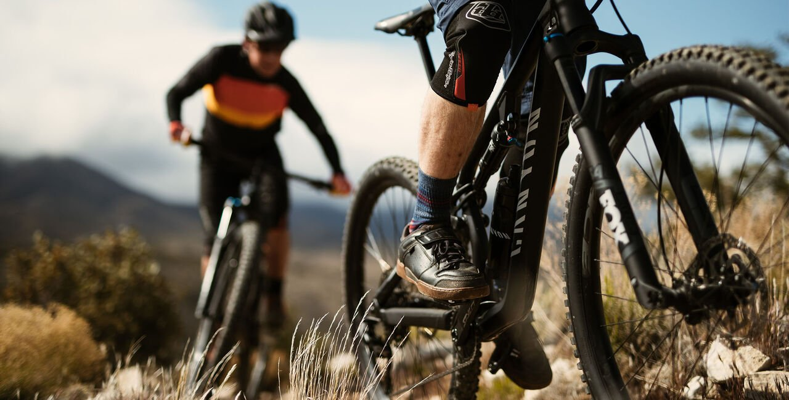
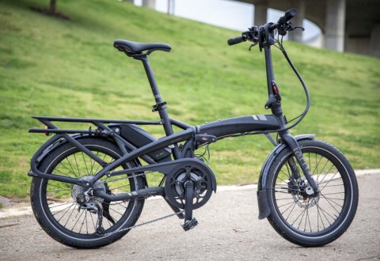
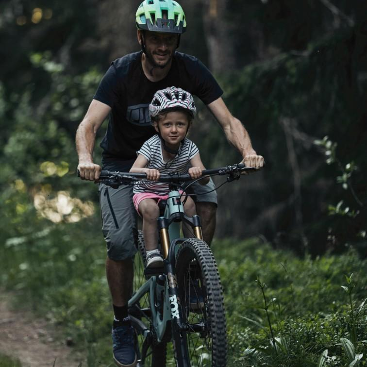

"בוק אי בייק" היא הרשת להשכרת אופניים בחיפה.
לנוחותכם, ההזמנה מתבצעת דרך האתר והאופניים יחכו לכם בשעה ובסניף שקבעתם.
כל זוגות האופניים להשכרה שברשותנו איכותיים, חדישים ובאים עם קסדה.
אנו מציעים מגוון רחב של גדלים ומידות,
כולל אופניים לילדים, למבוגרים, כיסא לילד, אופניים חשמליים ועוד.
| אופניים רגילים:
אנו מציעים אופניים רגילים לכל גיל עם אפשרות להוסיף כסא תינוק |
 |
|---|---|
|  |
אופניים חשמליים מתקפלים:
|
| קסדה לראש מוגן ורכיבה בטוחה
להנות ולהירגע בזמן הנסיעה מנעולים, סלסלה, כסא לילדים ועוד ... |
 |